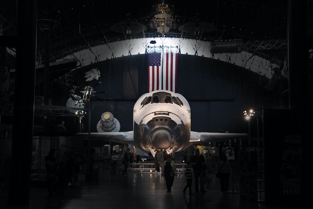
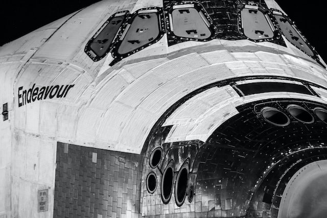
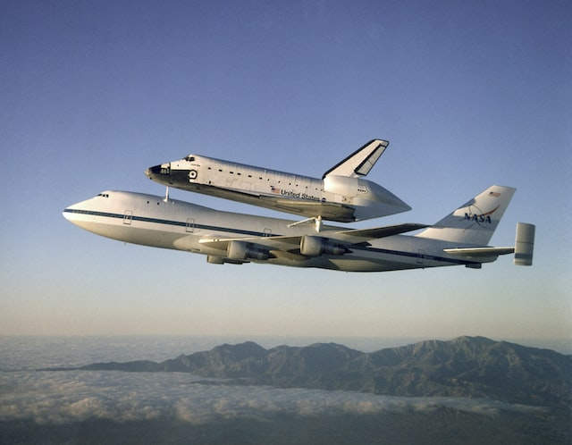
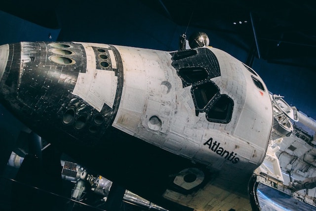

Tribute to the Space Shuttle
This site is a tribute to the Space Shuttle. NASA operated this partially orbital spacecraft from 1981 to 2011 as part of the Space Transportation System program. Five complete Space Shuttle orbiter vehicles were built and flown on 135 missions from 1981 to 2011, launched from the Kennedy Space Center in Florida.
Shuttle Gallery
The Space Shuttle was the first operational orbital spacecraft designed for reuse. Each Space Shuttle orbiter was designed for a projected lifespan of 100 launches or ten years of operational life, although NASA later extended this.




Learn More
The three surviving operational vehicles were retired following Atlantis's final flight on July 21, 2011. To learn more about the Space Shuttle, visit this Wikipedia page.